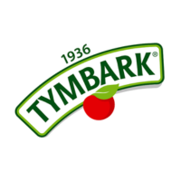

Współpraca
FMZ x Tymbark

Wyjątkowy cykl rozmów, który powstał we współpracy Fundacji Można Zwariować i marki Tymbark. Rozmawiamy w nim z młodymi twórcami internetowymi o tym, jak zachować balans we współczesnym, pędzącym świecie, i o ich „micro joys” – drobnych chwilach radości, które od razu poprawiają nastrój.
Micro joys to małe momenty, które przydarzają się każdemu z nas: ciepłe słońce na skórze w zimowy dzień, miłe słowo od nieznajomej osoby, same zielone światła w drodze do pracy. Łatwo je przeoczyć, bo nasza uwaga naturalnie częściej zatrzymuje się na tym, co trudne. Zauważanie ich to prosty sposób na praktykowanie wdzięczności w codzienności.
Praktyka wdzięczności nie wymaga wiele czasu. Wystarczy na koniec dnia zapisać albo przypomnieć sobie trzy dobre rzeczy, które się wydarzyły – nawet bardzo drobne. Badania pokazują, że regularne ćwiczenie wdzięczności może poprawiać samopoczucie, a z czasem sprawia, że łatwiej dostrzegamy to, co dobre. Wdzięczność nie zastąpi pomocy specjalisty, gdy dzieje się coś trudnego, ale może być jednym z codziennych sposobów dbania o siebie.
Gośćmi cyklu byli: Krystian Stasiewicz – twórca znany na TikToku jako @krisbringsfun, Jasmina Workert – podcasterka, youtuberka i influencerka, oraz Karolina Byrgiel – tiktokerka i influencerka.